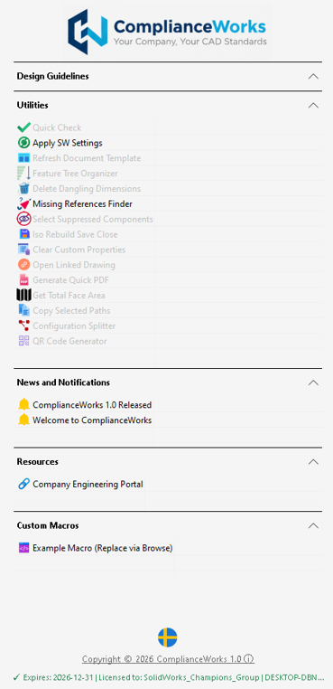
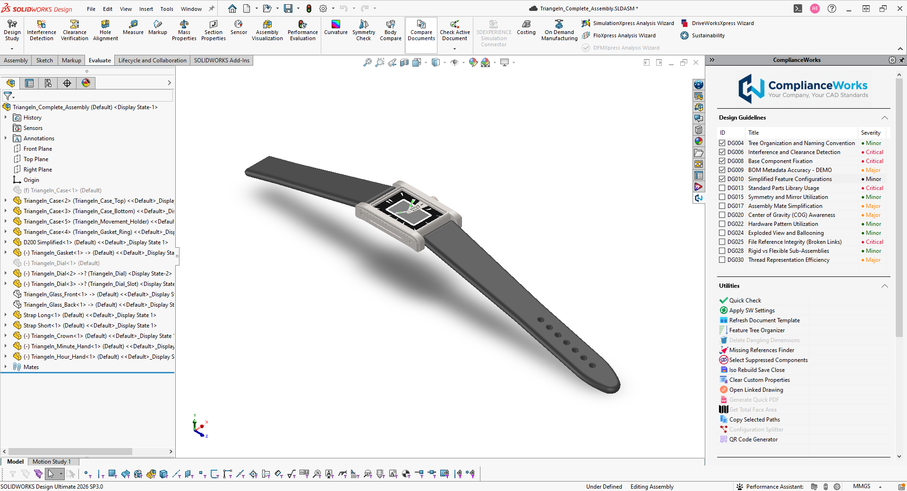
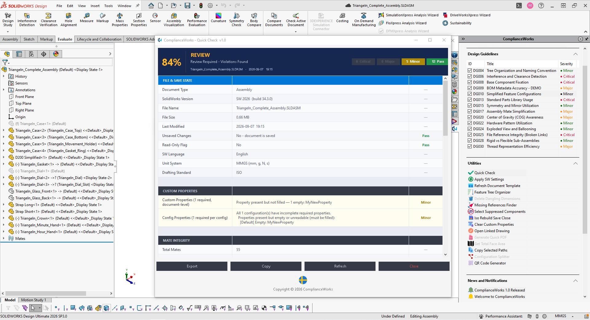
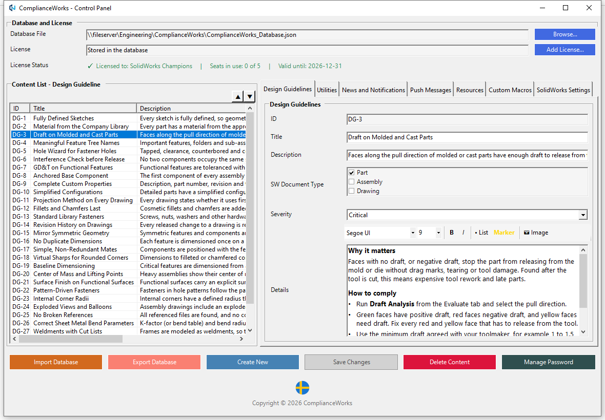

ComplianceWorks
CAD standards add-in for SolidWorks
Built for CAD administrators. Define your company's CAD standards once, and ComplianceWorks keeps every engineer on them, inside SolidWorks.
A personal side project, free to evaluate, with a working proof-of-concept licence included.
Version 1.0. Requires SolidWorks on Windows.

Standards only work if people follow them
The problem
Every engineering team has CAD standards, but keeping them consistent is hard. A new hire needs every rule explained. A senior engineer leaves and the knowledge leaves with them. A standard changes and you email the team, hoping everyone reads it. Someone works from home and their settings and templates differ. The result is rework, failed audits and time spent in review on drawings that should have been right the first time.
The solution
ComplianceWorks lives inside SolidWorks as a task pane, next to the model. The administrator defines the rules once (design guidelines, required settings, templates, macros and resources) and keeps them, licence included, in a single database file in a shared folder.
Every user imports that file once, from Tools > ComplianceWorks > Import Database. After that, each update the administrator publishes reaches the whole team the next time SolidWorks starts.
Built for CAD administrators
If you own the CAD standards for a SolidWorks team, this is one place to define the rules and one place to know they are being followed.
Define once
Write your design guidelines, required SolidWorks settings, templates, macros and resources in one password-protected control panel. No scripts, no scattered documents.
Roll out without chasing
Every user imports one database file from a shared folder. After that, each change you publish reaches the team by their next SolidWorks session. No reinstalls, no mass emails.
Check as work happens
Engineers tick off guidelines inside SolidWorks and run Quick Check scans, so deviations are caught before review or release instead of after.
Onboard faster
On day one a new engineer has the full CAD standards in the tool they already use. The standards stop living in one senior engineer's head.
Approve before release
Check files against your exact standards and mark them approved, so drawings and models shared with suppliers, partners and customers meet the same standard.
Stay in control
Everything lives in one file on your own server. No licence server, no cloud, no internet connection and no data collection.
What it does
Design guidelines
Your company's rules as a checklist inside SolidWorks. Engineers tick them off as they work, saved directly to the document.
Standards-based approval
Every company defines its own CAD standards. ComplianceWorks checks files against those rules and marks them approved before release.
Utilities
Quick Check compliance scans, Feature Tree Organizer, Generate Quick PDF, QR Code Generator and more. Fifteen tools, one click each.
Custom macros
Your existing SolidWorks macros, one click away in the task pane. The administrator picks the macro and its method, as for a SolidWorks macro button.
Resources
Links to your specifications, standards, supplier portals and network drives, kept current because the administrator controls them.
News and notifications
Publish a message to the task pane. A mandatory message is the first thing everyone sees the next time they open SolidWorks.
Central administration
One password-protected control panel manages rules, settings and the licence for the whole team, all kept in a single database file on your own server.
Automatic sync
When the administrator publishes a change, it reaches the team by their next session. No manual redistribution and no version drift.
Fifteen built-in utilities
- Quick Check
- Apply SW Settings
- Refresh Document Template
- Feature Tree Organizer
- Delete Dangling Dims
- Missing Refs Finder
- Select Suppressed Components
- Iso Rebuild Save Close
- Clear Custom Properties
- Open Linked Drawing
- Generate Quick PDF
- Get Total Face Area
- Copy Selected Paths
- Configuration Splitter
- QR Code Generator
In SolidWorks
Open an image to see it at full size.



Download
Version 1.0. Requires SolidWorks and Windows.
Sample database
29 sample design guidelines, news, resources and an example macro, with a working proof-of-concept licence built in.
Download database (JSON)Proof-of-concept licence
The licence is stored inside the sample database, so there is nothing to enter. Put the file in a shared folder your team can reach, or anywhere on your own computer to try it alone, then select it once via Tools > ComplianceWorks > Import Database. The licence validates and activates automatically.
- Licensed to
- SolidWorks Champions
- Seats
- 5
- Valid until
- 2026-12-31
Starting your own database instead? Download the licence file and add it in the Control Panel with Add License... > Load from File..., then click Save Changes.
Download licence file (.cwlic)
- Shared folder: for a team, the database and the licence file must be in a network folder every user can write to. Seat usage is tracked in a ComplianceWorks_Seats folder next to the database.
- Administrators can see the licence and the seats in use, and add a new licence key, in the password-protected Tools > ComplianceWorks > Control Panel.
- No data is collected and no internet connection is made. The licence is checked on your own computer.
ComplianceWorks is not for sale and is not a commercial product. It is provided free for evaluation. Get in touch if you would like a licence key of your own for a longer evaluation with your team, locked to your company's shared database folder.
Frequently asked questions
What is a CAD standards add-in?
A CAD standards add-in runs inside your CAD software and helps every engineer follow the company's CAD standards - design guidelines, required settings, templates and naming rules - instead of relying on documents nobody reads. ComplianceWorks is a CAD standards add-in for SolidWorks.
How does a CAD administrator enforce CAD standards across a SolidWorks team?
The administrator defines the rules once in a password-protected control panel and keeps them in a single database file in a shared folder. Every user imports that file once, and each update the administrator publishes reaches the whole team the next time SolidWorks starts.
Does ComplianceWorks need a license server or an internet connection?
No. The license is stored in the same database file on your own server and is checked on your own computer. ComplianceWorks makes no internet connections and collects no data.
Where do the database and license file need to be stored?
In a common network shared folder that everyone using ComplianceWorks has write access to. The database and the license file live there, and seat usage is tracked in a ComplianceWorks_Seats folder next to the database.
Can I try ComplianceWorks before rolling it out?
Yes. Download the installer, user guide and sample database from the download section. The sample database includes a working proof-of-concept license, so you can evaluate it alone or with your team straight away.
Questions and feedback
ComplianceWorks is a personal project, built and shared without commercial intent. Get in touch with any question, or to share your thoughts after trying the proof of concept. Feedback is always welcome.